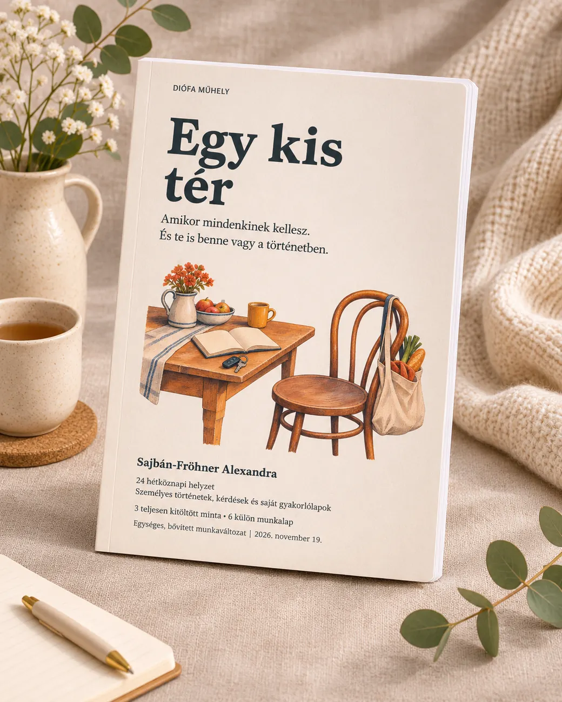

Digitális borítólátványterv az eredeti magyar grafika alapján; nem késztermékfotó.
Szakmailag jóváhagyott kiadvány
Előrendelhető e-mailben
A kiadvány nyelve: magyar
Egy kis tér

Önreflexiós munkafüzet felnőtteknek
A kiadványok magyar nyelven készültek. A más nyelvű ismertetők nem jelentenek lefordított nyomtatott kiadást.
Kinek szól?
18 éven felülieknek, túlterhelés és kapcsolati határok átgondolásához
Mi van benne?
24 hétköznapi helyzet, személyes történetek, három kitöltött minta és hat külön munkalap
Hogyan használd?
Válassz egy ismerős helyzetet. Pár szó is elég; bármit ki lehet hagyni.
Előrendelés e-mailben
Az előrendelési igényedet már most elküldheted e-mailben. A levél elküldése még nem visszaigazolt rendelés vagy lefoglalt példány. A pontos árat, a várható elérhetőséget és a feltételeket válaszlevélben egyeztetjük. A webshop készül.
Előrendelési igény küldéseItt nem történik fizetés. Bankkártyaadatokat ne küldj e-mailben.
Egy kis hely magadnak
Amikor mindenkinek jut belőled – csak neked nem
Ezt a munkafüzetet azoknak a hétköznapi pillanatoknak szántam, amikor jó szándékkal túl sok mindenre mondasz igent, miközben a saját időd és energiád lassan elfogy.
Ismerős helyzet
Amikor másoknak újra és újra igent mondasz, a saját határaid és a magadra szánt idő háttérbe szorulhatnak.
Mit ad a kiadvány?
A 24 ismerős helyzet, három kitöltött minta és hat munkalap helyet ad a felismeréseknek, a saját mondatoknak és egy apró következő lépésnek.
A 24 helyzet nem egymás után kipipálandó feladatlista. Van köztük halogatás, túlterhelés, segítségkérés, bűntudat és az a pillanat, amikor egy újabb kérésre már a válasz előtt elfáradsz. A szövegekben személyes, szerkesztett történetek és külön jelölt szemléltető példák váltják egymást.
A három teljesen kitöltött minta megmutatja, hogyan lehet egy kusza élményből néhány felismerhető mondat. A hat külön munkalap a saját helyzetedhez ad helyet. Nem kell sorban haladnod, és nem kötelező mindent leírnod: néhány szó vagy egy kihagyott kérdés is része lehet az őszinte használatnak.
A füzet felnőttek önreflexiós segédlete. Nem terápia, nem diagnózis, és nem várja el, hogy egy nehéz kapcsolati helyzetet egyedül oldj meg. A cél inkább egy megnevezhető következő lépés – vagy annak felismerése, hogy most támogatás kell.